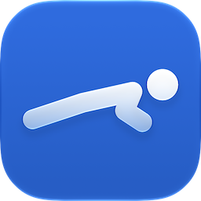
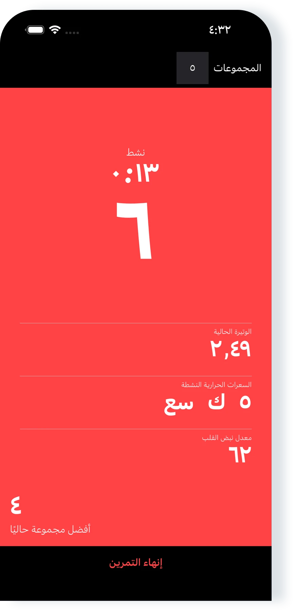
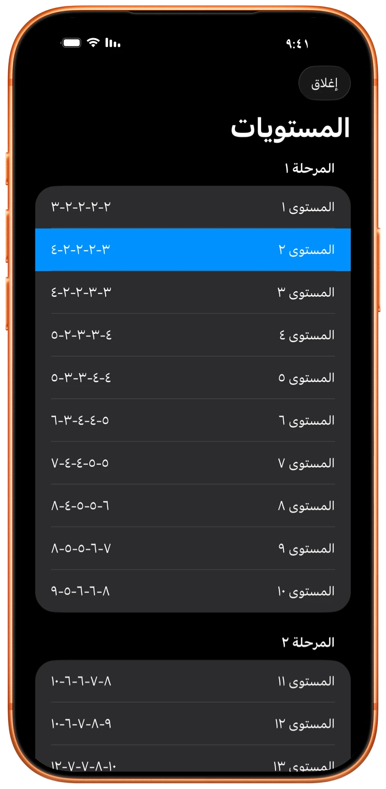
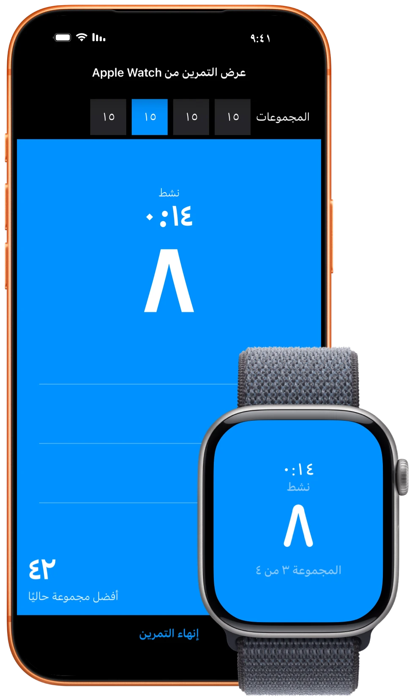
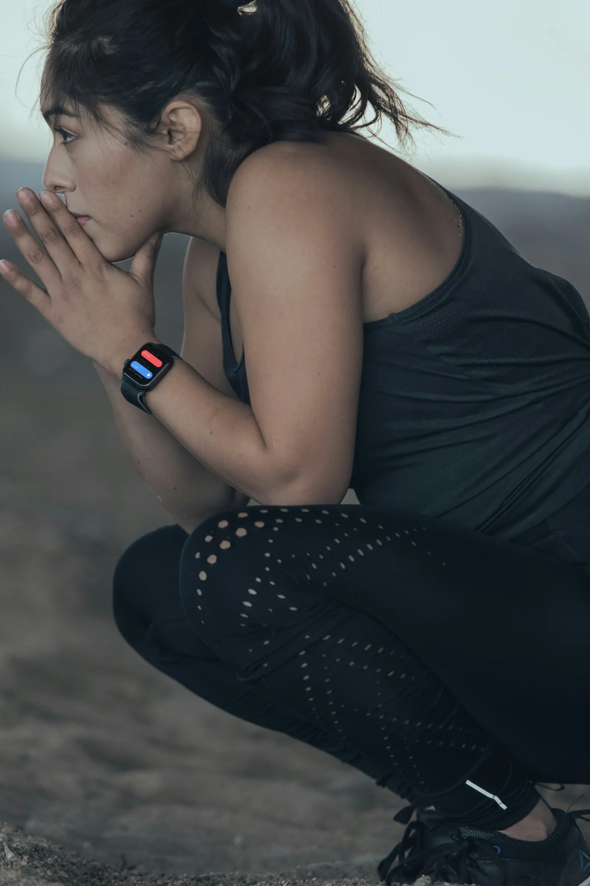

تطبيق رائع
“يعجبني هذا التطبيق حقًا. بساطته هي ما يجعله الأفضل!”
تدريب تمارين الضغط لـ iPhone وiPad وApple Watch

ابنِ قدرتك حتى ١٠٠ تمرين ضغط بإيقاعكاتبع البرنامج أو تدرّب بحرية. Pushanova يعدّ تمارين الضغط على iPhone وiPad وApple Watch.

مجاني للبدء. بلا حساب. بلا إعلانات.

البرنامج من ٥٠ مستوى. ابدأ من أي مستوى، أو تدرّب بحرية واختر مجموعاتك. يمكنك أيضًا تسجيل مجموعات تمارين الضغط أثناء تمارين أخرى أو تدريب القوة.
Pushanova لا يفرض جدولًا يوميًا أو أسبوعيًا. يمكنك إعادة مستوى وأخذ أيام راحة، بلا عقوبة على الانقطاع.

ضع iPhone أو iPad على الأرض، أو ابدأ على Apple Watch. عدّ تنازلي قصير يمنحك وقتًا لتتخذ وضعك.
Pushanova يعدّ تمارين الضغط تلقائيًا ويسجّل المجموعات والإيقاع والوقت والسعرات. أنت تختار مدة الراحة: تابع أبكر أو استرح أطول.
ابدأ التمرين وأنهه على Apple Watch من دون iPhone بجانبك. معًا، Apple Watch يعدّ بينما iPhone يعرض التمرين نفسه.
Pushanova يحفظ كل تمرين مكتمل. سجلك يُظهر كيف يتغيّر التدريب مع الوقت.

“يعجبني هذا التطبيق حقًا. بساطته هي ما يجعله الأفضل!”
“التطبيق ممتاز. يساعدني على أداء المزيد من تمارين الضغط، ويحفّزني على الاستمرار في التحسّن.”
“أستطيع الآن أداء الكثير من تمارين الضغط! كتبه ابننا البالغ ١٣ عامًا، وقد حفّزه هذا التطبيق كثيرًا.”
“أحب هذا التطبيق. قررت مؤخرًا أن أرى مدى السرعة التي يمكنني بها الوصول إلى ١٠٠ تمرين ضغط. لم أجد تطبيقًا يجعل ذلك سهلًا بسعر مناسب حتى وجدت هذا. أحب وضوح التطبيق. والمطوّر يستجيب للملاحظات بسرعة.”
عُدّلت مراجعات App Store قليلًا من أجل الطول والوضوح.
تتبّع تمارين الضغط على iPhone وiPad لا يلتقط صورًا ولا يسجّل أو يحفظ أو يرفع فيديو. Pushanova لا يستخدم الكاميرا للتعرّف عليك.
Pushanova لا يحتاج إلى حساب، ولا يبيع بياناتك، ولا يحتوي على إعلانات. بيانات التمرين تبقى على أجهزتك وفي حساب iCloud الشخصي عندما تكون المزامنة مفعّلة. بإذنك، يمكن حفظ التمارين المكتملة في Apple Health.
يمكن استعادة التمرين الجاري إذا أُغلق Pushanova أو قُوطع.
لا. يمكن لـ Pushanova تتبّع تمارين الضغط باستخدام iPhone أو iPad. يضيف Apple Watch التتبّع من المعصم ويدعم تمارين الضغط المرتفعة على المقعد أو العقلة.
نعم. يمكنك بدء تمرين وإكماله على Apple Watch بينما iPhone ليس بجانبك. تطبيق Watch يركّز على التمارين. سجل التمارين والتحليلات متاحان على iPhone وiPad.
عندما تستخدم Apple Watch وiPhone معًا، يمكن لـ Apple Watch تتبّع تمارين الضغط بينما يعرض iPhone التمرين المتزامن.
على iPhone وiPad، تقيس الكاميرا الأمامية تغيّر المسافة بين وجهك والجهاز. على Apple Watch، يحلّل Pushanova حركة معصمك. يمكنك أيضًا تفعيل إعداد يعدّ تمرين ضغط واحدًا في كل مرة تنقر فيها الشاشة.
نعم. على iPhone، يمكن لـ Pushanova استخدام مستشعر آخر في الجهاز عندما لا يتاح الوصول إلى الكاميرا. على iPhone وiPad يمكنك تفعيل العدّ بالنقر على الشاشة. Apple Watch لا يستخدم كاميرا.
لا. العدّ التلقائي لا يلتقط صورًا ولا يسجّل أو يحفظ أو يرفع فيديو. الكاميرا تقيس المسافة فقط، وPushanova لا يستخدمها للتعرّف عليك.
يدعم iPhone وiPad تمارين الضغط العادية على الأرض وتمارين الضغط من الركبتين. يدعم Apple Watch أيضًا تمارين الضغط المرتفعة على مقعد أو عقلة.
تمارين الضغط على مقابض متوازية والكفّان متقابلان غير مدعومة. قد تنجح تمارين الضغط على المفاصل، لكن العدّ قد يكون أقل دقة.
لا يمكن لأي طريقة تتبّع تلقائية أن تعدّ كل حركة بشكل صحيح. موضع الجهاز والأداء والسرعة قد تؤثر في النتيجة. بعد التمرين يمكنك تصحيح عدد تمارين الضغط في كل مجموعة موجودة.
يمكنك البدء بالمستويات الأولى، وهي مجموعات صغيرة. تمارين الضغط من الركبتين مدعومة. يمكنك إعادة مستوى والتقدّم بإيقاعك.
نعم. يمكنك البدء من أي مستوى أو التدريب بحرية. يمكن لـ Pushanova تسجيل مجموعات تمارين الضغط أثناء تمارين أخرى أو تمارين القوة.
البرنامج من ٥٠ مستوى في ثلاث مراحل. كل مستوى تمرين منظّم بمجموعات وأهداف محددة لتمارين الضغط. المستوى الأخير مجموعة واحدة من ١٠٠ تمرين ضغط.
يمكنك البدء من أي مستوى، أو إعادة مستوى، أو الانتقال إلى مستوى آخر. المستويات العشرة الأولى مجانية. Pushanova Premium يفتح المستويات ١١–٥٠.
نعم. يمكنك إكمال مستوى في تمرين والتدريب بحرية في تمرين آخر. يمكنك أيضًا متابعة التدريب بحرية بعد إكمال مستوى في التمرين نفسه.
نعم. Pushanova لا يفرض جدولًا يوميًا أو أسبوعيًا. يمكنك إعادة المستويات وأخذ أيام راحة والعودة إلى البرنامج عندما تكون جاهزًا.
أثناء تمرين المستوى، يقترح Pushanova ٩٠ ثانية راحة بين المجموعات المخططة. يمكنك المتابعة أبكر أو الراحة أطول. عندما تدرّب بحرية، لا يوجد هدف ثابت للراحة.
لا يمكنك بناء تسلسل مجموعات وحفظه قبل التمرين. عندما تدرّب بحرية، تقرر عدد تمارين الضغط والمجموعات أثناء التدريب، وPushanova يسجّل التمرين.
نعم. بإذنك، يحفظ Pushanova تمارين القوة المكتملة في Apple Health، بما في ذلك المدة والسعرات النشطة والنبض عند توفره. أعداد تمارين الضغط والمجموعات لا تُحفظ في Apple Health.
إذن Apple Health مطلوب لتمارين Apple Watch. وهو اختياري على iPhone وiPad.
نعم. يقدّر Pushanova السعرات النشطة حتى من دون جهاز نبض. يمكن أن يأتي النبض من Apple Watch أو سماعات نبض متوافقة أو جهاز Bluetooth لمراقبة النبض.
قياس النبض بسماعات متوافقة يتطلب iOS ٢٦ أو أحدث على iPhone، أو iPadOS ٢٦ أو أحدث على iPad.
نعم. Pushanova تطبيق كامل على iPad مع العدّ التلقائي وبرنامج ١٠٠ تمرين ضغط وخيار التدريب بحرية وسجل التمارين والتقدّم والتحليلات وApple Health.
نعم. يمكنك بدء تمرين وحفظه من دون اتصال بالإنترنت. تستأنف مزامنة iCloud عندما يعود الجهاز إلى الإنترنت. مشتريات App Store تحتاج إلى اتصال.
لا. Pushanova لا يحتاج إلى حساب أو عضوية. يمكنك استخدام التطبيق من دون بريد إلكتروني أو كلمة مرور. Pushanova Premium اختياري ويُشترى عبر App Store.
نعم. التدريب المجاني يشمل تمارين بلا حدود ومن دون أهداف مسبقة، والمستويات العشرة الأولى، والعدّ التلقائي على iPhone وiPad وApple Watch. Pushanova لا يحتوي على إعلانات.
يمكن للمشتركين الجدد المؤهلين تجربة الاشتراك السنوي مجانًا لثلاثة أيام. يبدأ تلقائيًا ما لم تلغِ قبل انتهاء التجربة. شراء مدى الحياة بلا تجربة، ويعرض App Store السعر قبل الشراء.
يمكنك التدريب بحرية للمدة التي تريدها. المستويات العشرة الأولى والعدّ التلقائي مجانيان أيضًا. ابدأ تمرينًا على iPhone أو iPad أو Apple Watch.

بلا حساب. بلا اشتراك مطلوب. بلا إعلانات.
